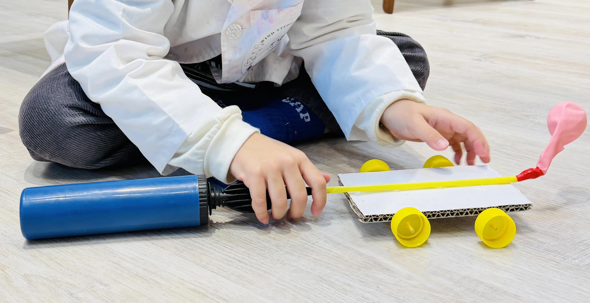

SELECTED WORK
Questions become
learning in motion.
A growing collection of inquiry-led learning experiences, curriculum experiments and reflections from practice.
CASE STUDIES / FIELD NOTES
Each case looks closely at what children notice, try and make possible.
03 live cases

CASE 01 · AGES 3–6 · STEAM / INQUIRY
When Air Becomes Motion
A Mandarin-medium engineering investigation into air, movement and repair, with English vocabulary introduced as a small language scaffold.

CASE 02 · AGES 2–6 · CURRICULUM INQUIRY
How Do We Know a Fruit?
A six-month Mandarin-medium mixed-age inquiry that moved between everyday experience, community exploration, sensory investigation and making.

CASE 03 · ADULT LEARNING · FACILITATION
Positive Discipline Starts with Understanding
A Mandarin-led parent workshop that used questions, role-play and reflection to make empathy practical while holding space for caregiver emotion.